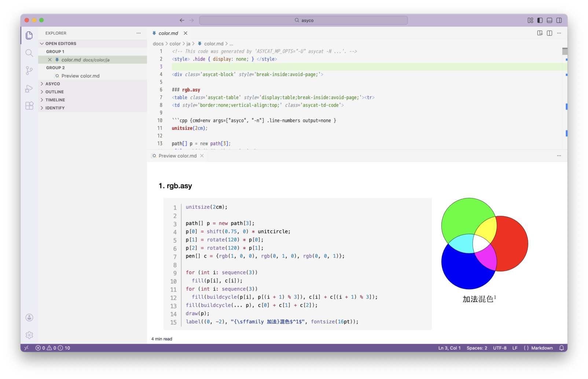

asycat
asycat を使うと、Asymptote または MetaPost のファイルから、コードと図を横に並べたマークダウンを生成できます。図の埋め込みには Visual Studio Code (VS Code) の拡張機能である Markdown Preview Enhanced (MPE) のコードチャンクを用います。

マークダウンは、VS Code と、ブラウザや pandoc を経由することで PDF ファイルに変換できます。asycat はコードチャンクからは呼び出せず、シェルのコマンド行から実行する必要があります。

必要な環境とインストール
INSTALL.md を参照してください。
使用法
マークダウンファイルの作成
Asymptote や MetaPost のファイルを引数に指定して asycat をシェルのコマンド行で実行し、出力されるマークダウンをファイルにリダイレクトします。
次の例では、作業ディレクトリの下の拡張子が .asy のファイルについて、図とコードを並べたマークダウンを output.md に出力します。
$ asycat *.asy > output.md
コードチャンクの実行
マークダウンファイルを VS Code で開き、必要に応じて修正して保存します。Open Preview to the Side でプレビューを表示し、Run Code Chunk（ ▶︎ ボタン）または Run All Code Chunks（ ALL ボタン）でコードチャンクを実行します。
PDF ファイルの作成
プレビューのショートカットメニュー（コンテキストメニュー）で Open in Browser を実行します。ブラウザで文書を印刷することで PDF ファイルを作成できます。大きい用紙（例えば A3）への印刷をお勧めします。ショートカットメニューの Export > HTML で HTML ファイルを作成し、pandoc コマンドで HTML ファイルを PDF ファイルに変換することもできます。
オプション
-B- 印刷の際にファイルごとに改ページします。
-N- コードに行番号を表示します。
-Wと同時には指定できず、-Wは取り消されます。 -P {N|S|E|W|F}- コードに対して図を表示する位置を設定します。
Nは上、Sは下、Eは右、Wは左に図を表示します。Fはコードを表示せず図だけを表示します。省略時値はEです。 -W- コードを折り返します。
-Nと同時には指定できず、-Nは取り消されます。 --fig-width=WIDTH- コードと図が横並びの配置（
-P Eまたは-P W）の場合に、図の幅をWIDTHに設定します。省略時値は30%です。 --fixed-layout- コードと図が横並びの配置（
-P Eまたは-P W）の場合に、table-layoutをfixedに設定します。 --heading=LEVEL- 見出しのレベルを
LEVELの絶対値に設定します。見出しにはファイル名を用い、LEVELが負の値ではファイル名からディレクトリを除去します。LEVELが0では見出しを表示しません。省略時値は3です。 --id-prefix=PREFIX- 図がコードの左の配置（
-P W）の場合に、コードチャンクのidの前半部の文字列をPREFIXに設定します。idの後半部は通し番号です。省略時値はfig-です。 --lang-asy-as=LANG- Asymptote のファイル（
*.asy）での構文強調表示の言語をLANGに設定します。省略時値はcppです。 --lang-as=LANG- MetaPost のファイル（
*.mp）での構文強調表示の言語をLANGに設定します。省略時値はmetafontです。 --no-alt- ファイル名を図の代替テキストに設定しません。
--no-cd- ファイルのあるディレクトリに移動しません。
--- オプションの終了を示します。この後の引数はファイル名またはディレクトリ名として扱われます。
他に、最初の引数でだけ有効な次のオプションがあります：-h, --help（使用法を表示して終了）、--version（バージョンを表示して終了）。
その他のオプションは asyco または mepoco に渡されます。このため、短いオプションは結合できません（例えば -NB ではなく -N -B です）。また、短いオプションとその引数は結合できません（例えば -PE ではなく -P E です）。
環境変数
環境変数はシェルの初期設定ファイル（例えば ~/.bash_profile）またはコマンド行から設定できます。
ASYCAT_ASY_OPTSasycoのオプションを指定します。ASYCAT_MP_OPTSmepocoのオプションを指定します。
これらの環境変数は asycat のオプションの設定には使えません。
クラス
クラスを用いた CSS (Cascading Style Sheets) プロパティの設定はマークダウン文書の全体に適用され、後の設定が優先されます。
asycat-block- ファイルごとの
<div>ブロックに設定されます。
以下のクラスは、コードと図が横並びの配置（-P E または -P W）の場合に有効です。
asycat-table- コードと図を含む表に設定されます。
asycat-td-code- コードと図を含む表の、コードのセルに設定されます。
asycat-td-fig- コードと図を含む表の、図のセルに設定されます。
使用例
複数のディレクトリの指定
ディレクトリは -- の後または最後の引数として指定する必要があります。次の例では、ディレクトリ tests と docs/color の下の、拡張子が .asy または .mp のファイルから、マークダウン文書 output.md を作成します。
$ asycat -- tests docs/color > output.md
実行ディレクトリの設定
作業ディレクトリの下にないファイルを指定した場合、asyco や mepoco は各ファイルのあるディレクトリで実行されます。
$ asycat tests/test.asy > output.md
図の表示部のコードチャンクのオプションは次のようになり、args に asyco のオプション --cd=tests が付加されます。
```cpp {cmd=env args=["asyco", "-A", "N", "--cd=tests", "--alt=test"] output=html .hide continue}
マークダウン文書のあるディレクトリで asyco を実行したい場合は --no-cd を指定します。
$ asycat --no-cd tests/test.asy > output.md
図の表示部のコードチャンクのオプションは次のようになり、args に --cd オプションは付加されません。
```cpp {cmd=env args=["asyco", "-A", "N", "--alt=test"] output=html .hide continue}
Asymptote と MeatPost で別々のオプション
環境変数を用いると、asyco と mepoco で別々のオプションを指定できます。
$ ASYCAT_ASY_OPTS="--img-zoom=2x" ASYCAT_MP_OPTS="--img-zoom=2" asycat -f png *.asy *.mp > output.md
複数の出力結果の結合
図がコードの左の配置（-P W）の場合、コードチャンクの参照に id を用います。
$ asycat -P W rgb.asy > rgb.md
$ asycat -P W cmyk.asy > cmyk.md
この場合 rgb.md と cmyk.md の両方で id=fig-1 のコードチャンクが生成されます。
```cpp {cmd=env args=["asyco", "-n"] output=none id=fig-1}
asycat の複数の出力結果をひとつのマークダウン文書にまとめる（@import で取り込むなどの）場合、id の衝突を避けるため --id-prefix を用います。
$ asycat -P W --id-prefix=fig-c- cmyk.asy > cmyk.md
この場合 cmyk.md で id=fig-c-1 のコードチャンクが生成されます。
```cpp {cmd=env args=["asyco", "-n"] output=none id=fig-c-1}
著作権と利用許諾
(c) 2025-2026 aelata
このソフトウェアは MIT No Attribution (MIT-0) で利用許諾されます。ただし、本許諾は拡張子が .html または .js のファイルには適用されないものとします。
https://opensource.org/license/mit-0